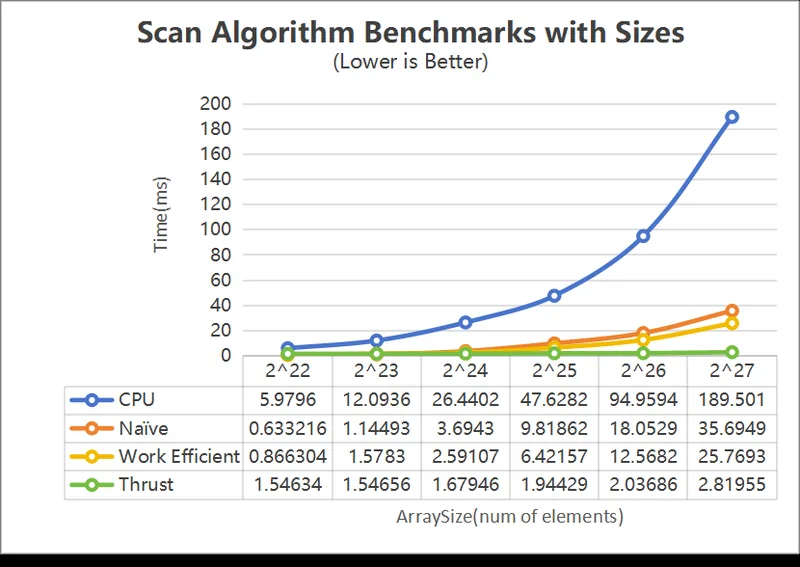
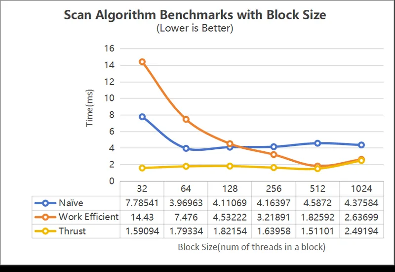
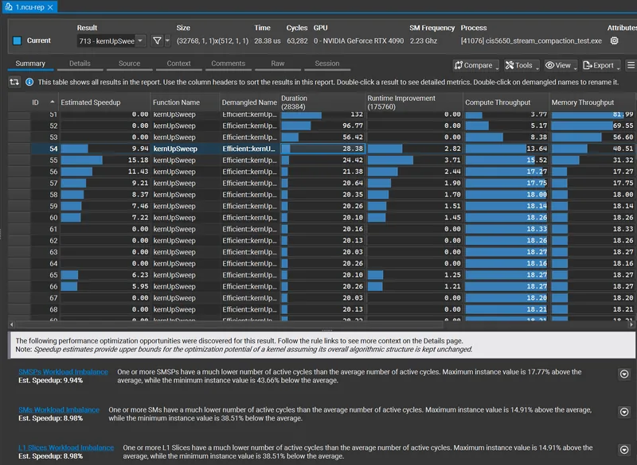

CUDA Stream Compaction
Prefix-sum scan and stream compaction in CUDA: a CPU baseline, a naive GPU scan, a work-efficient GPU scan and Thrust, timed against each other and profiled with Nsight Compute.

- Year
- 2024
- Type
- Individual project
- Tested on
- RTX 4090, i7-13700K, Windows 11
- 190.1 → 26.2 msexclusive scan of 134 million elements, CPU against the work-efficient GPU scan
- 251.3 → 31.4 msstream compaction, fastest CPU version against the GPU
- 43.66%under-used streaming multiprocessors in the up-sweep, found with Nsight Compute
Overview
Stream compaction removes the elements a later stage no longer needs, such as terminated rays in a path tracer. It is built on scan, so most of the work went into the scan.
- CPU baselineScan and compaction in plain loops, used to check the GPU results
- Naive GPU scanOne kernel launch per level, working in global memory
- Work-efficient GPU scanUp-sweep and down-sweep over a balanced tree, with arrays padded to a power of two
- Stream compactionMap to booleans, scan, then scatter
- Thrustthrust::exclusive_scan as the reference
What the profiler showed
In Nsight Compute the up-sweep takes most of the time: 28.38 ms per kernel on average, against 20.26 ms for the down-sweep. Some streaming multiprocessors run up to 43.66% below the average load, so the next step would be to balance the work across them and tighten memory access.
Exclusive scan, 134 million elements
Block size 256, power-of-two array. Thrust stays well ahead of both hand-written versions.
Stream compaction, 134 million elements
Charts and profile
-

Run time by array size -

Run time by block size -

Nsight Compute profile of the work-efficient scan